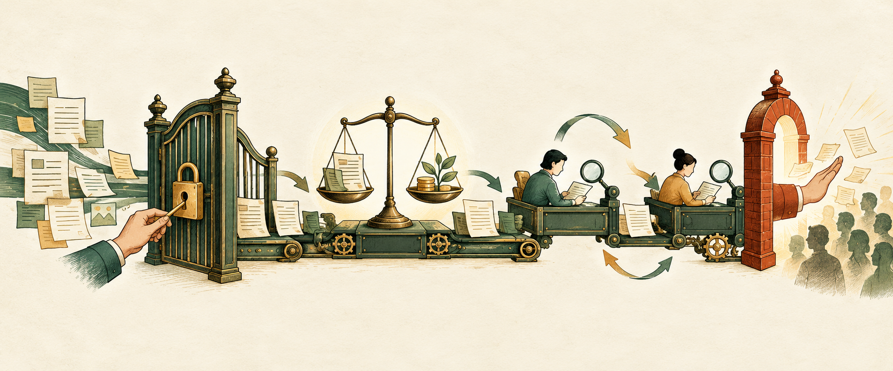

前兩篇文章談了如何把 AI 接進真實工作，以及如何用 90 天試點建立可驗收流程。接下來最實際的問題是：一條工作流裡，到底哪裡應該自動走完，哪裡必須停下來等人？

先分清楚三個問題，不要全部叫「風險」
很多團隊把是否自動化、是否值得做、要不要人工核准，全塞進同一張高低風險表。這看似簡單，卻會把三種本質不同的決定混在一起。
資格門檻
系統有沒有權限與正當性做這件事？沒有，就停止；不能用效率或低錯誤率換取通行。
值不值得做
節省的時間與改善的品質，是否大於審核、返工、維護與例外處理成本？
斷點放哪裡
對已被允許、也值得自動化的步驟，再用復原難度與重做代價決定何時停下來。
NIST AI RMF Core把治理視為貫穿生命週期的工作，要求組織定義人與 AI 的角色、責任與監督；它也把「是否應繼續開發或部署」和後續風險處理分開。這支持一個重要觀念：先有組織規則與責任，再談如何量化和管理風險。
四步方法：從流程拆解到人工斷點
第一步：把流程拆成可以交付的子步驟
不要問「這份工作能不能全自動」，而要列出每一步的輸入、輸出、使用身分、外部影響與失敗回復方式。只要其中一格仍寫著「AI 自己判斷」，流程就還不夠清楚。
拆解後，原本的一件工作通常會變成：取得資料、辨識、整理、草擬、寫入、發布、回報。這些步驟的權限與後果不同，不應綁成同一個自動化開關。
第二步：先過資格門檻
資格門檻問的不是「錯誤機率多低」，而是「誰授權、能代表誰、是否符合政策與權利」。例如替本人公開發文、接受合約、付款、發布新承諾，必須有明確授權與負責人；沒有授權時，即使技術成功率很高、刪文也很容易，仍然不能執行。
第三步：判斷值不值得做
先建立沒有 AI 時的基準線，再把人工審核、錯誤返工、模型與工具費用、維護、例外處理一併算入。若一段工作每月只發生一次、人工五分鐘就完成，卻需要長期維護串接與權限，它可能技術上做得到，經濟上卻不值得。
這不是要求每家公司套用同一個公式，而是提醒：生成速度只是收益的一部分，後續工作也是真成本。
第四步：用兩軸模型找斷點
只有在一個步驟已通過資格門檻，而且值得自動化之後，才比較兩個軸：錯了有多難復原，以及發現太晚要重做多少工作。關卡應放在任一軸即將明顯跳升之前。
軸一：復原難度
能否撤銷、回到穩定版本、保留原始資料？錯誤是否已進入外部系統，或影響別人的權益與判斷？
軸二：重做代價
若現在才發現錯誤，要重跑多少計算、重寫多少內容、重錄多少聲音，又需要多少人工重新檢查？
案例一：一張明信片，其實有六段工作
以我們實際使用的明信片流程為例，使用者上傳圖片後，系統會取得檔案、辨識地點與內容、投稿網站、準備社群文案、發布到社群，最後回報各階段結果。若只把它叫做「自動投稿」，真正的權限邊界就會被藏起來。
| 子步驟 | 交付物 | 主要判斷 | 適合的控制 |
|---|---|---|---|
| 1. 取得圖片 | 有效且可讀取的來源檔 | 檔案是否有效、來源是否在允許範圍 | 格式、大小與來源驗證；失敗即停止 |
| 2. 辨識內容 | 地標、地區、描述與候選標籤 | 哪些是看見的事實，哪些只是推估 | 保留原圖；不確定資訊標示待確認 |
| 3. 投稿網站 | 可瀏覽的明信片頁面 | 是否已有明確投稿授權；重複或錯誤是否可更正 | 授權範圍、欄位驗證與結果回執 |
| 4. 粉專發文 | 以指定品牌口吻發布的原文 | 是否有代表該身分公開發文的資格 | 資格門檻；沒有明確授權就不執行 |
| 5. 社群發文 | 符合平台限制的另一篇原文 | 帳號身分、內容與發布權是否一致 | 資格門檻；各平台結果分開判定 |
| 6. 結果回報 | 網站、粉專與社群各自的成功或失敗狀態 | 是否把部分成功誤報成整體成功 | 逐段回報；社群失敗不抹掉網站投稿結果 |
這個案例的重要性不在某個平台，而在「部分成功」的處理方式：網站投稿成功、社群發布失敗，是兩個獨立事實。把整條流程壓成一個綠色勾勾，會讓人既無法復原，也找不到真正卡點。
案例二：影片的兩個成本關卡，以及一個發布門檻
我們也把一篇文章實際製作成解說動畫，並公開了《AI 辦公室 90 天落地路線圖》影片。製作工具把文章轉成文稿、配音、動畫、字幕、封面與 YouTube 上架資料包。本文只公開方法與成品，不揭露私人專案內容。
這套流程有三次人類確認，但三關不能排成同一條「愈後面愈危險」的線。
文稿核准
同屬兩軸模型。文字一旦鎖定才進入配音與場景製作。若太晚改字，可能連動重做配音、發音檢查、時間軸、動畫、字幕、章節與說明，因此重做代價高。
看片核准
同屬兩軸模型。單一構圖或字幕錯誤可局部修正；全片節奏、聲畫同步或旁白錯誤則可能需要重新混音、算繪與輸出，因此要在包裝上架前確認。
沒有日誌，就不要發明重做數字
這支首部公開成片沒有保留下可稽核的逐次重做日誌，因此文稿與看片兩關的實際重做次數、實際耗時均記為 N/A，不能把印象寫成統計。
- 在文稿、聲音、風格與場景程式都已備妥，且第一次執行不用修正的假設下，五分鐘影片從配音、檢查、算繪到上架包，粗估約 40–130 分鐘。
- 若包含寫稿、場景程式、人工看片與返工，合理單位是半天到數天。
- 硬體、場景複雜度與修正次數都會大幅改變結果；下一支影片應直接記錄每關進出時間與返工原因。
把關卡寫進流程，不要只畫一個人形圖示
OpenAI 的 Guardrails 與人工核准指南區分自動驗證與人工批准，並建議在取消、修改、執行命令或敏感工具等會產生副作用的動作前暫停。真正可用的人工關卡，至少要回答以下問題：
- 誰有資格批准或拒絕？
- 審核者能看到來源、差異與不確定性嗎？
- 逾時時是停止，還是默認通過？
- 拒絕後回到哪個穩定版本？
- 核准範圍是單次、限時，還是常設授權？
- 每一段成功與失敗是否分開記錄？
如果審核者只看到一個「確認」按鈕，卻看不到 Agent 準備做什麼、根據什麼、會改到哪裡，那不是 human-in-the-loop，只是 human-as-a-button。
一張可以直接使用的斷點檢查表
- 拆：列出每個子步驟的輸入、輸出、身分、外部影響與回復方式。
- 擋：先檢查授權、身分、權利與政策；沒有資格就停止，不進入風險計分。
- 算：用人工基準線比較節省、品質、審核、返工、維護與例外成本。
- 畫：對通過前兩關的步驟，標出復原難度與重做代價跳升的位置。
- 放：在跳升之前設關卡，寫清楚批准者、資訊、逾時、拒絕與回復規則。
- 記：保存每次退件、修改、重跑時間與原因，讓下一次決策使用真實資料。
結論：關卡不是煞車，而是把速度留給可以加速的地方
自動化不是從頭到尾消滅人，而是讓機器持續處理已獲授權、值得做、可被驗證的部分；在人必須承擔責任，或返工成本即將跳升之前，清楚交棒。
方法、案例與來源
- NIST AI Risk Management Framework Core：治理、角色責任、人類監督，以及 Map／Measure／Manage 的風險管理架構。
- OpenAI Developers：Guardrails and human review：自動檢查、敏感工具動作的暫停與人工核准。
- AI 辦公室 90 天落地路線圖：先證明、再接線、後擴大：上述影片流程的首支公開成品。
- 前篇：AI 怎麼跟工作接地氣？、前篇：AI 怎麼進辦公室？90 天落地路線圖。
查證日期：2026 年 9 月 30 日。本文的「資格門檻／值不值得做／兩軸斷點」是依公開框架與兩個自有案例整理出的編輯方法，不是 NIST 或 OpenAI 的官方分級。明信片案例已泛化，不公開 credential、內部端點、個資或部署細節。影片 40–130 分鐘為明列假設的規劃估算，並非實測 benchmark；因缺少可稽核重做日誌，實際重做次數標記為 N/A。本文由 AI 協助查證、整理、配圖與排版，發布前須經獨立複審與金霸確認。